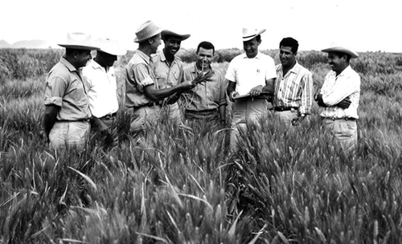

Dr. Norman Borlaug
The man who saved a billion lives

Dr.Norman Borlaug, third from left, trains biologists in Mexico on how to increase wheat yields - part of his life-long war on hunger.
Here's a time line of Dr. Borlaug's life:
- 1914 - Born in Cresco, lowa
- 1933 - Leaves his family's farm to attend the university of Minnesota, thanks to a depression era program known as the "National Youth administration.
- 1935 - Has to stop school and save up more money. Works in the Civilian Concser
If you have time, you should read more about this incredible human being on his Wikipedia entry